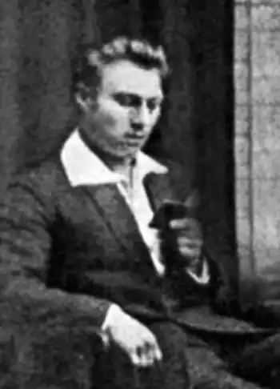

Справжнє прізвище – Олександр Костянтинович Варавін. Інші псевдоніми: Аполлоній Листопад, Олесь Топаз. Народився 1899 р. в с. Боголюбівка на Катеринославщині. Був сотником армії УНР, після поразки Визвольних змагань опинився разом з іншими вояками в таборах інтернованих у Польщі. Там взяв участь у літературно-мистецькому товаристві "Вінок", друкував на початку 1920-х поезії та оповідання в часописах "Веселка", "ЛНВ", "Залізний Стрілець", "Рідний Край", "Нова Україна".
Закінчив Катеринославську духовну школу, 4 класи Катеринославської духовної семінарії (1918), Спільну юнацьку школу (Каліш, 28 липня 1921) та Українські матуральні курси в Подєбрадах (жовтень 1924). Навчався в Катеринославському гірничому інституті та на історико-філософському факультеті Катеринославського університету (1919).
До українського війська прилучився в Києві 31 серпня 1919 року. У вересні 1919 році вступив до Кам'янець-Подільської спільної військової школи на гарматний відділ. Під час любарської катастрофи в листопаді 1919 захворів на тиф. У лютому 1920, видужавши, знову вступив до Військової школи. У її складі й "перебував під час всіх військових подій, наступів та відходів". Інтернований у таборі міста Каліша. 13 травня 1922 році взяв участь в організаційних зборах, на яких було створено літературний журнал "Веселка". Олександра Варавина обрано до складу редакційної колегії майбутнього періодичного видання. Євген Маланюк у рецензії на друге число "Веселки" боровся із впливом на О. Варавина (Аполлонія Падолиста) творчості російського поета Ігоря Сєвєряніна, зокрема написав: "п. Падолист безнадійно закохався не то в Чупринку, не то в Сєвєряніна…" Жертвував кошти на лікування вояків, хворих на сухоти. Автор поеми "Непомітні (відламок минулого)", присвяченої "Оборонцям Січеслава р. 1918". Закінчив гідротехнічний відділ Української Господарської академії в Подєбрадах 1927 року. "Дипломний проект оборонив з успіхом добрим". У 1922–1924 рр. О. Варавін навчався у Подєбрадах. У 1931 р. видав у Празі збірку поезій "Земля і сонце" під псевдонімом Олесь Топаз. На початку 1930-х друкувався в журналах "Нові Шляхи" та "Промінь". У 1932 р. виїхав в Україну. Там його, як і всіх інших поворотців, репресували.